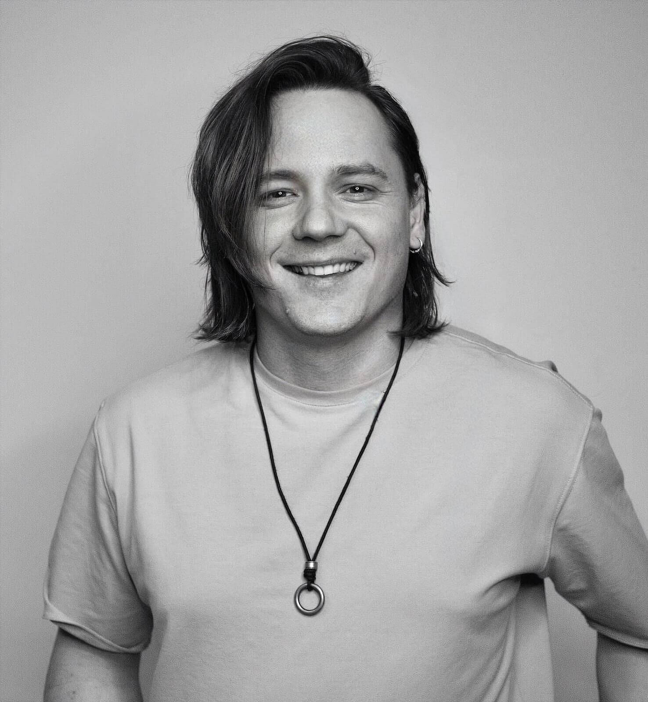

15 лет в музыкальной индустрии
За это время побывал в разных ролях: артист на сцене, музыкант, звукорежиссёр на площадке. Знаю индустрию с разных сторон.

Обо мнеПродюсер · Звукорежиссёр · Музыкант
Я очень люблю свою работу и отдаюсь делу с душой и всем сердцем. Всегда вовлекаюсь в проект артиста и в сам процесс. Я творческий человек, и для меня важен результат: всеми силами стараюсь добиться по-настоящему качественного звучания.
За это время побывал в разных ролях: артист на сцене, музыкант, звукорежиссёр на площадке. Знаю индустрию с разных сторон.
Профессионал, дипломированный специалист.
Звукорежиссёр, музыкант, гитарист, оператор, монтажёр и колорист. Закрываю и музыкальные, и визуальные задачи: от песни до клипа.
Послушайте мои работы или напишите мне в Telegram.
Слушать работы Написать в Telegram